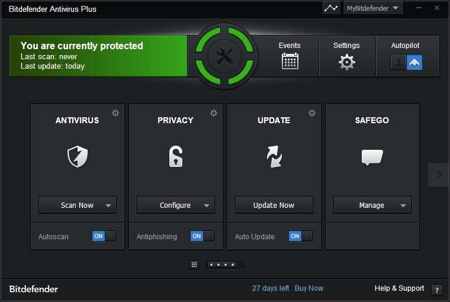

Топ-10 найкращих антивірусів 2019 року!
За версією Cyber-Secure ©
360 Total-Security
Функціонал програми включає в себе:
- Додаткову програму для усунення вразливостей операційної системи;
- Регулярне встановлення патчів;
- Потужна взаємодія з системою на програмному рівні;
- Утиліта для очищення пристрою від «сміття»;
Dr.Web
Завдяки особливій технології пошуку шкідливих програм, антивірус здатний аналізувати поведінку підозрілих файлів, і таким чином, визначати їх як потенційно небезпечні.
Така процедура виявлення використовується для тих типів вірусів, які ще не були занесені в базу даних.

Malwarebytes Premium
Це антивірусне програмне забезпечення являє собою цілу систему для ефективного захисту комп’ютера від вірусів, шкідливих і шпигунських програм.
Розробники позиціонують програму, як потужний аналог більшості антивірусів, який, до всього іншого, може захистити операційну систему від спливаючих рекламних банерів і запобігти приховану роботу деяких розширень.
Антивірус Касперського
Даний антивірус є найпопулярнішим захисником на території всього СНД. Він чудово знайомий користувачам всього світу.
Ось вже більше десяти років антивірус від лабораторії Касперського користується величезною популярністю.
Avast Premium
AVAST, за довгі роки свого перебування на ринку, завоював статус надійного і простого у використанні захисника, який здатний швидко виявити і знешкодити будь-який вид загрози.
Оновлена версія стала більш "легкою" і почала швидше справлятися з поставленими завданнями.

Comodo
Даний антивірус входить в топ даного рейтингу з ряду причин:
- Безкоштовний захисник для браузерів;
- Швидке виявлення загроз самих різних типів;
- Програма не навантажує систему;
- Приємний користувальницький інтерфейс.
Avira
Особливості програми:
- Синхронізація даних на декількох пристроях в режимі онлайн;
- У новій версії поліпшені алгоритми пошуку шкідливого ПЗ;
- Висока продуктивність.
Bitdefender Soft
Даний софт представляє потужну систему по захисту комп’ютера і включає в себе брандмауер, додаткову програму, яка спеціально розроблена виключно для захисту особистих даних користувачів і безпосередньо сам антивірус.
Антивірус прекрасно підійде тим, хто дбає не тільки про стабільну роботу систем, а й ретельно стежить за своїми особистими даними користувача.
AVG
Серед особливостей можна виділити наступні:
- Використання одного з найкращих у світі алгоритмів для виявлення та знищення вірусів;
- Кросплатформеність. Можливість працювати як з мобільними пристроями, так і з ПК;
- Програма може стабільно працювати навіть на машинах з досить низькими технічними характеристиками;
System Care Ultimate
Якщо технічні характеристики вашого пристрою не дозволяють працювати зі складними типами захисників системи, програма System Care замінити повноцінний антивірус.
Програма забезпечує:
- Захист в режимі реального часу;
- Робота у фоновому режимі, не навантажуючи систему.